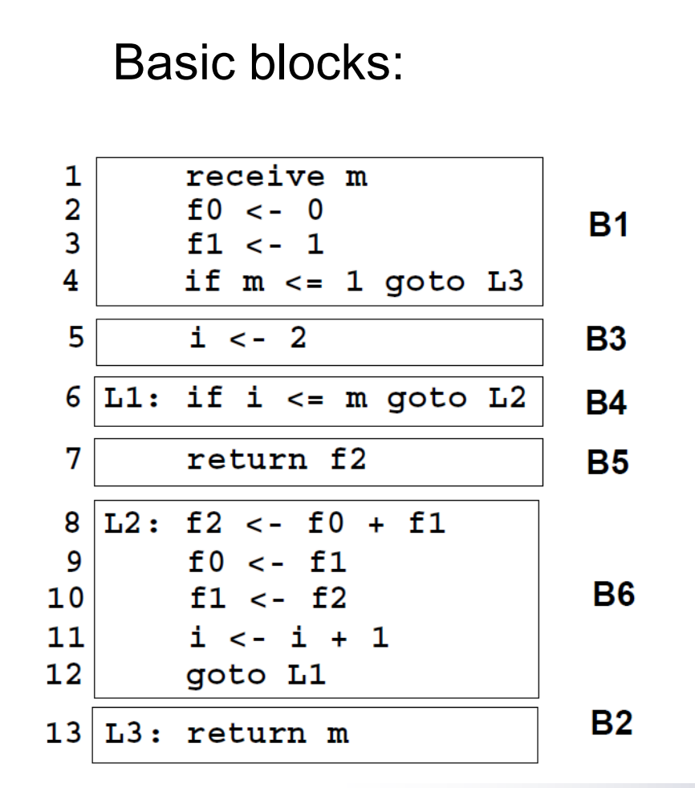
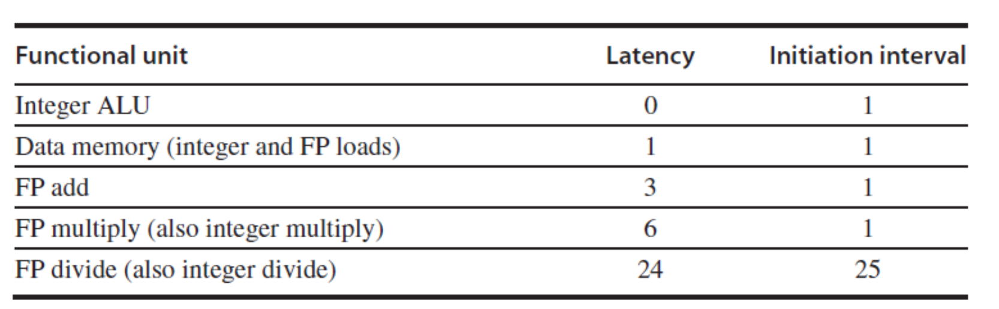
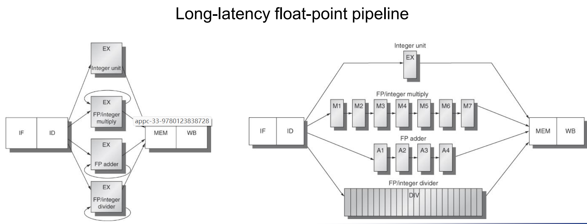
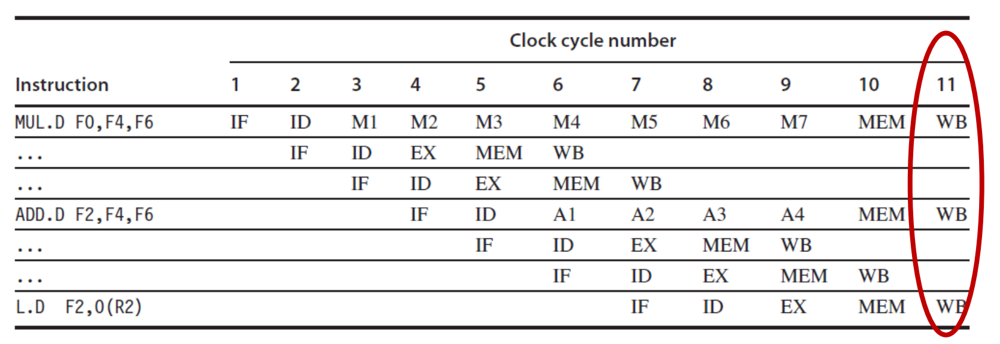
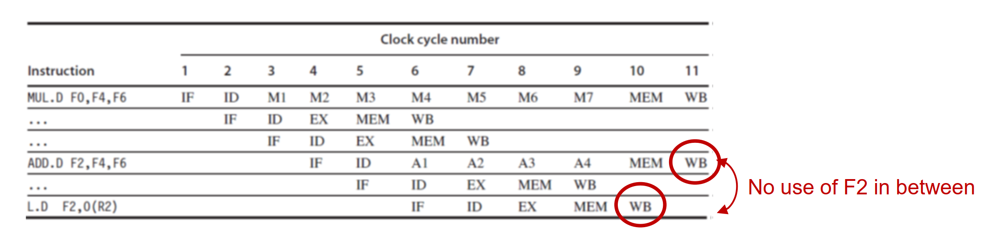
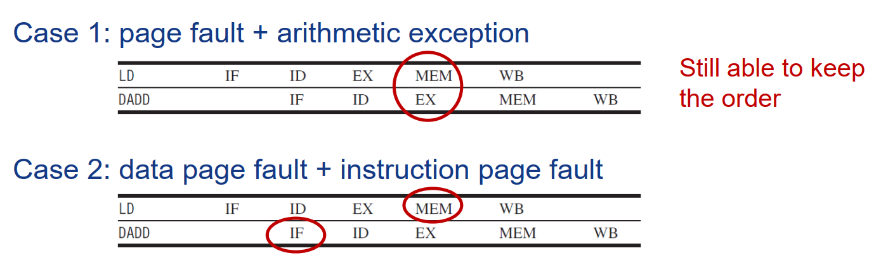
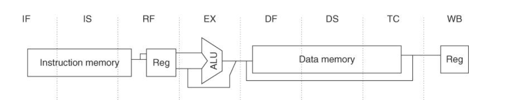
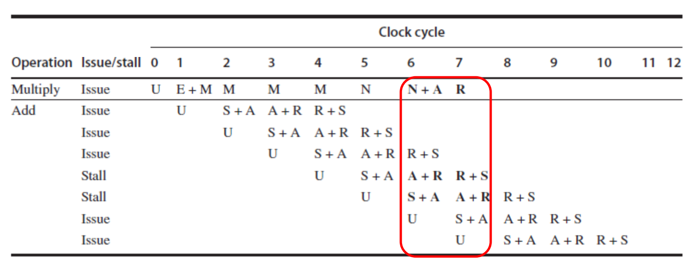

Instruction-Level Parallelism (ILP) and Its Exploration¶
前序笔记参考：
- RISC-V 处理器 Pipeline 设计 1
- RISC-V 处理器 Pipeline 设计 2
I. Basic MIPS pipelining¶
1.1 Pipeline is not So Simple¶
ILP 的目标是实现更低的 CPI，我们有 CPI 公式：
这里存在一个 Basic Block 的概念，Basic Block 指的是：一段线性代码序列，除了入口处外没有其他分支进入，除了出口处外也没有其他分支跳出。
例如：
原始 C 代码
int fib (int m) {
int f0 = 0, f1 = 1, f2, i;
if (m <= 1)
return m;
else {
for (i = 2; i <= m; i++) {
f2 = f0 + f1;
f0 = f1;
f1 = f2;
}
return f2;
}
}
编译后的汇编代码：

Basic Block 的典型大小为 3–6 条指令，因此必须跨分支进行优化。
1.2 Data Dependence and Name Dependence¶
Data dependence = True Dependence: 数据相关/真相关，关注的数据依赖。
Name dependence: 因为重复使用了相同的寄存器名（或内存地址名）而产生的伪相关，包括 Antidependence (反相关) 和 Output dependence (输出相关)。
① Data/True Dependence¶
指令序列案例：
对应名称：RAW (Read After Write) 写后读冒险。I1 还没写，I2 就要读。
理解：
- 依赖是程序的属性：无论硬件怎么做，只要程序代码要求前一条指令先算出结果，后一条指令才能用，这个顺序就不能变。这决定了指令计算的顺序。
- ILP 的上限（Upper bound on ILP）：Data Dependence是程序本身带来的“天花板”。哪怕有无限宽的发射器、无限多的 ALU，也无法突破这种数据流动的限制。要打破它，只能靠编译器改变算法（比如重结合律）。
但是 Pipeline 是否停顿由微架构决定，依赖（Dependence） 是程序代码的性质，而 冒险（Hazard） 是微架构层面的现象。如果硬件有强大的 Forwarding 甚至 Out-of-Order 机制，Data Dependence 未必会导致流水线停顿
此外，内存依赖难以检测，例如：
这是体系结构中的经典难题。两条指令 S.D 和 L.D 可能访问同一个物理地址，但硬件在流水线中很难立刻判断出来。因为 R4 和 R6 里面的值在运行时才知道。这种内存别名会导致潜在的真相关，编译器为了安全通常不会把这两条内存指令重排。
② Name Dependence¶
Name Dependence 是实现乱序执行（OoO）的核心突破口。
-
Antidependence (反相关) → WAR (Write After Read) 读后写
S.D F2, 0(R1) // 用 R1 算地址 DADDUI R1, F1, #-8 // 修改 R1 S.D F2, 0(R1) DADDUI R1, F1, #-8 BNE R1, R2, L后一条指令试图写一个寄存器，而前一条指令时读。如果乱序执行，可能会把旧值覆盖了。
* Output dependence (输出相关) → WAW (Write After Write) 写后写两条指令都要写
F0。如果乱序执行，后一条先写，前一条后写，最终F0的值就错了。
关键理解：
- 核心现象：没有信息流动。WAR 和 WAW 仅仅是因为名字相同（Name dependent）！实际上
DADDUI的R1和S.D的R1物理上根本不需要是同一个东西。它们没有真实的数据传递。 - 问题：重排序的障碍。如果硬件想乱序执行，让后面的指令先跑，名称相关就会导致错误。
- 解决方案：寄存器重命名：这是后面章节（比如 Tomasulo 算法）的核心。硬件动态分配一个物理寄存器来替代这个“名字”。比如上面右图，
ADD.D可以把结果写到一个内部隐藏的物理寄存器P1中，而不覆盖F0。这样 WAW 就消除了。同理，WAR 也可以通过重命名消除。
II. Complications in MIPS Pipelining¶
Multicycle operations
- Hazards
- Floating-point operations
Exceptions
- 在 MIPS 架构中，实现精确异常（precise exceptions）较为简单，因为在 EXE 或 MEM 阶段只会提交一个结果。
- 若在 execution 过程中状态可能发生变更，情况会变得更加复杂。例如 "Auto-increment addressing modes in IA-32"。
2.1 Multicycle Operations¶
这里首先需要明确两个概念：
-
Latency: 从数据产生（某个指令开始执行）到数据可用（可以被后续指令使用）之间的周期数。可以理解为：因为硬件计算单元的计算开销而导致的流水线需要 Stall 的周期数
当然，这种理解不准确，具体是否会 Stall 取决于指令间的举例以及 Fowarding 的实现。更准确的表述要加上约束：相邻两条指令，Fowarding 尽早转发。
- Initiation Interval: 同一个功能单元连续发射两条同类型指令之间需要等待的最少周期数。
例如如下不同硬件单元的 Latency 和 Initiation Interval：

- Integer ALU：
- Latency = 0，因为它完成运算只需要消耗一个时钟周期，在有 Forwarding 的情况下，下一条指令在下一个运算周期就可以使用它的运算结果。
- Initiation 1。说明它是全流水线，每个周期都能吃进新指令。
- FP add / FP multiply：
- Latency 分别 3 和 6，可以参见下面的微架构图，它们运算分别需要消耗 4 和 8 个时钟周期
- 但 Initiation 都是 1。说明它们虽然是多周期的，但也是全流水线（Fully Pipelined）的，每个周期都可以发射一条新指令。
- FP divide (及整数除法)：
- Latency 24
- Initiation 25。这是最致命的！为什么是 25 而不是 1？因为除法器极难做成全流水线（硬件太庞大）。它通常是非流水线或半流水线的。也就是说，在 24 个周期算完之前，除法器被独占，无法接收新的除法指令。当然，这取决于除法器的具体实现。
两种微架构图

左图是早期设计，IF -> ID 之后，指令被分发给不同的功能单元（Integer, FP multiply, FP adder, FP divider）。
每个功能单元都是一个单独的“大 EX 阶段”。算完之后，大家统一汇合到 MEM -> WB 阶段。问题：不同延迟的指令在后级汇合时可能竞争 MEM / WB 资源，必须增加相应的冲突检测与停顿控制。
右图是进阶版本：由于浮点运算极慢，必须把 EX 内部再细分为多级流水线：
- Multiply：被分成了 M1 到 M7，Latency 6。
- Adder：被分成了 A1 到 A4。
- Divider：那个巨大的灰色大长条，代表它是不可细分的，或者内部级联极长且不能流水化。
- 注意数据的流向（右侧箭头）：所有功能单元算完后，统一通过旁路（Bypass）或总线汇合到
MEM / WB阶段。
所以，Multicycle Operations 带来的问题主要有三点：
- 结构冒险（Structural Hazards）。例如：如果除法单元的
Initiation Interval是 25，只要连续执行两条除法指令，第二条必须乖乖等 25 个周期才能进入除法器。这就是结构冒险。需要“排队站（Reservation Station）”来缓冲这些指令。 - 乱序完成（Out-of-Order Completion）：
- 由于延迟不同（ALU 只要 0 周期，除法要 24 周期），如果指令 1 是除法，指令 2 是加法。加法早就算完了，但除法还没算完。
- 如果严格按顺序写回（In-Order Write-back），加法就必须等除法算完才能写寄存器，这会造成极大的流水线停顿。
- 这就引出了动态调度：允许指令乱序完成，但必须按顺序提交（In-Order Commit），以保证程序语义正确。
- 精确异常（Precise Exceptions）：
- 如果一条需要执行 24 个周期的除法指令在最后时刻发生了除零异常，而此时后面的 10 条加法指令已经执行完毕并修改了寄存器，该如何恢复现场？这要求硬件有非常复杂的重排序缓冲（ROB, Reorder Buffer）。
Sturctural Hazards¶
观察如下流水线时空图：

MUL.D：经历了 M1-M7 和 MEM，要在 CC11 进行 WB。ADD.D：经历了 A1-A4 和 MEM，也要在 CC11 进行 WB。L.D：经历了 EX 和 MEM，同样也要在 CC11 进行 WB。
因为只有一个写端口，硬件无法在同周期把三个数据同时写进寄存器。这就是由“多周期操作”引发的经典Structural Hazard。必须有人停下来（Stall）。
三种解决方案：
- Adding more ports
- 做法：把寄存器堆从单写端口升级成多写端口（比如支持一周期同时写 3 个）。
- 缺点：极其浪费，因为大部分时间端口是空闲的。并且增加寄存器的写端口意味着需要更多的译码逻辑、更宽的总线、成倍的晶体管。
- Track the use of the write port in ID stage
- 做法：既然我们知道各类指令的固定延迟（例如 MUL 是 8 个周期到 WB，ADD 是 5 个周期），那就在指令刚刚解码（ID 阶段）时，算一算它将在未来的第几个周期到达 WB。如果发现当前流水线里已经有一条指令预定了那个周期的写端口，就在 ID 阶段提前让这条指令 Stall，不让它发射。这叫静态调度/硬件互锁（Interlock）。
- 优点：逻辑集中，不需要改动后面的流水线。著名的记分牌（Scoreboard）算法早期就是类似思想，在发射前通盘考虑。
- 缺点：如果指令延迟不固定（比如访存指令遇到 Cache Miss，可能在 MEM 停很久），ID 阶段就算不准它什么时候到 WB 了，这套逻辑就会失效。
- Stall when it tries to enter either MEM or WB
- 做法：不做其他操作，指令正常往前执行。如果到了 MEM 或者 WB 阶段前，发现有其余指令在用写端口，当前指令就在原地等一个周期。这叫 Backpressure（背压）。
- 缺点：如果 WB 堵住了，前面的 MEM 就不能进 WB，MEM 就得停；MEM 停了，前面的 EX 就进不来，EX 也得停……整个流水线会一路堵到最前面的 IF 阶段。 这会导致硬件控制逻辑异常复杂（需要给每一段流水线加一堆 Valid/Ready 握手信号）。
这些是旧时代（静态调度，按序执行）的痛点。
如果不允许“乱序执行”，只要多个指令在 WB 撞车，要么在 ID 阶段硬等，要么在后面堵死。
后续高级架构的解法（引出下节课的核心）：
1. 多端口寄存器堆。
2. 引入保留站（Reservation Station）和重排序缓冲（ROB）：也就是 Tomasulo 算法。让这些指令不要直接去抢 WB，而是先算完放到一个名为 CDB（公共数据总线）的通道里排队。写回阶段（Commit）再按照程序原本的顺序，一条一条慢慢写回寄存器堆。
3. 寄存器重命名（Register Renaming）：如果写端口不够，我们可以分配物理寄存器池，让它们先写到不同的物理寄存器里，打破这种单一命名空间的硬件结构竞争。
Data Structural Hazards¶
WAW but no WAR¶
在经典的按序发射 MIPS 流水线中，指令通常在 ID 阶段读取源操作数：
- No WAR Hazard：老指令已经在 ID 阶段读取操作数，年轻指令才有机会进入后面的写回阶段，因此不会发生“年轻指令先写，破坏老指令尚未读取的值”。
- WAW Hazard 可能出现：不同功能单元的 Latency 不同，年轻指令可能比老指令更早完成并写回，造成最终寄存器值错误。
例如：

程序要求 F2 最终保存 I2 的 Load 结果。如果 I2 先写回、I1 后写回，就会被 I1 的旧结果覆盖，产生 WAW Hazard。
两种处理思路：
- Delay Issue：在 ID 阶段暂缓发射
L.D，直到可以保证老指令先写回。这是最直接的硬件互锁方案。 - Suppress Old Write：如果能确定 I1 的结果不会再被后续指令读取，可以禁止 I1 对
F2的过时写入；但需要额外的控制逻辑保证正确性。
More RAW Hazards due to Long Latency¶
对于长延迟 FP 运算，即使后续指令只依赖一个结果，也可能需要等待多个周期。例如：
Forwarding 的基本原理不变，但来源不再只是 EX/MEM 与 MEM/WB 转发：Hazard Detection / Forwarding Unit 还要检查多种功能单元的结果出口，如之间微架构图的 A4/MEM、M7/MEM、D/MEM 等。
- 如果相关结果已经产生，可以从对应的功能单元结果端 Forwarding。
- 如果结果尚未产生，必须 Stall；
2.2 Out-of-Order Completion¶
多周期功能单元的另一个问题是：按序发射（In-Order Issue）不代表按序完成（In-Order Completion）。
示例：
DIV.D F0, F2, F4 # I1：较早发射，仍未完成
ADD.D F10, F10, F8 # I2：较晚发射，已经完成
SUB.D F12, F12, F14 # I3：执行过程中发生异常
由于 DIV 的执行延迟比 ADD 更长，I2 可能先于 I1 完成，这就是 Out-of-Order Completion。注意，这里不需要 Out-of-Order Issue，只要功能单元延迟不同就可能出现。
如果 I2 已经写回寄存器，而 I3 又发生异常，处理器就必须回答：I1 尚未完成、I2 已经修改架构状态时，如何恢复到一个符合程序顺序的状态？
因此必须区分两个时刻：
- Execution Completion：功能单元完成计算，得到结果。
- Architectural Commit：结果对程序可见，正式改变架构状态。
在更高级的处理器中，可以允许乱序完成，但要通过额外机制维持精确的提交顺序。这也是下一节 Precise Exception 的核心问题。
2.3 Precise Exception¶
Precise Exception(精确异常): 流水线可以暂停，使得出错指令之前的指令得以完成，而该指令之后的指令则可从头重新开始执行。
Precise Exception要求发生异常时，处理器呈现一个与程序顺序一致的状态：
- 异常指令之前的指令均已完成应有的架构状态更新；
- 异常指令及其之后的指令没有留下不应存在的架构状态修改；
- 保存正确的异常指令 PC，使程序能够在处理后继续或重新执行（如 Page Fault）。
多个流水线阶段同时检测到异常¶
异常不一定只在一个阶段被发现：IF 可能检测到取指 Page Fault，ID 可能检测到非法指令，EX 可能检测到算术异常，MEM 可能检测到数据 Page Fault。
两个例子：

- Case 1：老指令
L.D在 MEM 发生 Page Fault，年轻指令DADD在 EX 检测到算术异常。虽然两个异常在同一时刻出现，但应优先处理程序顺序更早的L.D异常。 - Case 2：老指令在 MEM 遇到 Data Page Fault，年轻指令在 IF 遇到 Instruction Page Fault。同样不能因为年轻指令的异常在前端先被报告，就忽略老指令的异常。
一种思路是为流水线中的指令携带 Exception Status / Cause（Associated Status Vector），将异常信息与对应指令、PC 关联起来，在能够判断指令先后关系的位置选出需要报告的异常，并屏蔽年轻指令的副作用。
Exception 处理的流水线控制¶
经典 MIPS 流水线的 Exception 处理流程可以概括为：
- 记录异常 PC 与原因
- 禁止异常指令及年轻指令写入架构状态
- 重定向取指到 Exception Handler。
对于深流水线或可能乱序完成的 FP 运算，真正困难的是：年轻指令可能已经完成，甚至更新了寄存器，而老指令的异常才被发现。
这时仅靠普通 Flush 不一定能恢复精确状态，必须额外约束架构状态更新的顺序或保存足够的恢复信息。相关的按序提交机制将在后面的 Dynamic Scheduling / ROB 中进一步学习。
2.4 Case Study: MIPS R4000 (Elective)¶
Superpipelining¶
MIPS R4000 是深流水线（Superpipelining） 案例。与经典五级流水线相比，它进一步拆分取指和数据访存阶段，共有 8 个阶段：
IF → IS → RF → EX → DF → DS → TC → WB
- IF / IS：两级取指，其中 IF 负责选择 PC 并启动 I-Cache 访问，IS 完成取指。
- RF / EX：译码、读取寄存器并检查 Hazard；随后完成 ALU 运算、地址计算或分支判定。
- DF / DS / TC：分阶段完成 D-Cache 数据访问和 Tag Check。
- WB：写回寄存器结果。
分级更细有利于缩短单级组合逻辑路径，但会增加结果产生与控制重定向的距离。例如：
- 紧邻 Load 的相关指令需要等待 2 cycles；
- Branch 的控制冒险代价为 3 cycles。

Floating-Point Pipeline¶
R4000 的 FP Pipeline 不是为每一种浮点指令完全复制一套硬件，而是组合使用 8 类执行阶段：U（Unpack）、S（Shift）、A（Adder）、R（Round）、E（Exponent Test）、M/N（Multiplier）、D（Divider）。
运算参数如下：
| FP Operation | Latency | Initiation Interval |
|---|---|---|
| Add / Subtract | 4 | 3 |
| Multiply | 8 | 4 |
| Divide | 36 | 35 |
| Square Root | 112 | 111 |
与之前的简化例子（FP ADD / MULT 的 Initiation Interval 均为 1）不同，R4000 的实际浮点执行单元不能在每个周期启动同类运算，因为不同指令会复用内部的执行阶段。
例如 P36 中，先发射一条 FP Multiply，再尝试连续发射 FP Add。某些发射时机下，Multiply 与 Add 会在相同周期争用 A 或 R 等阶段，因此即便两条指令没有 RAW 数据依赖，也必须推迟 Add 的发射。这是多周期流水线内部的 Structural Hazard。
